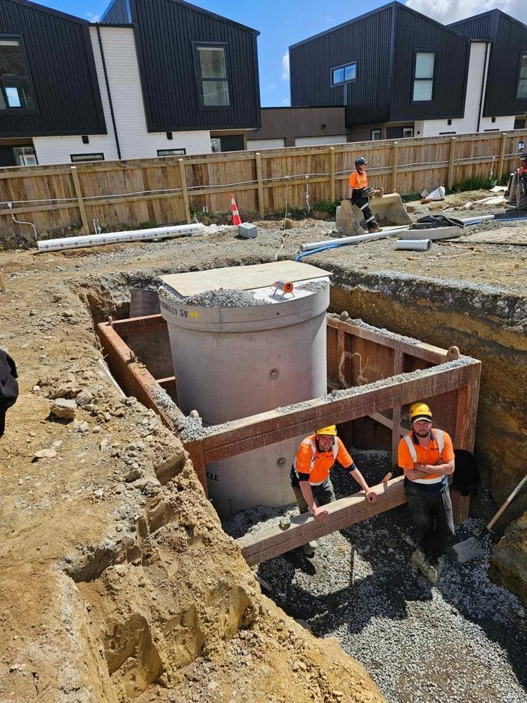
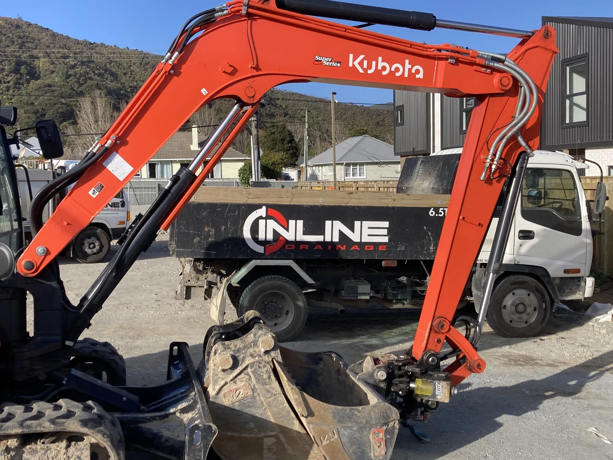
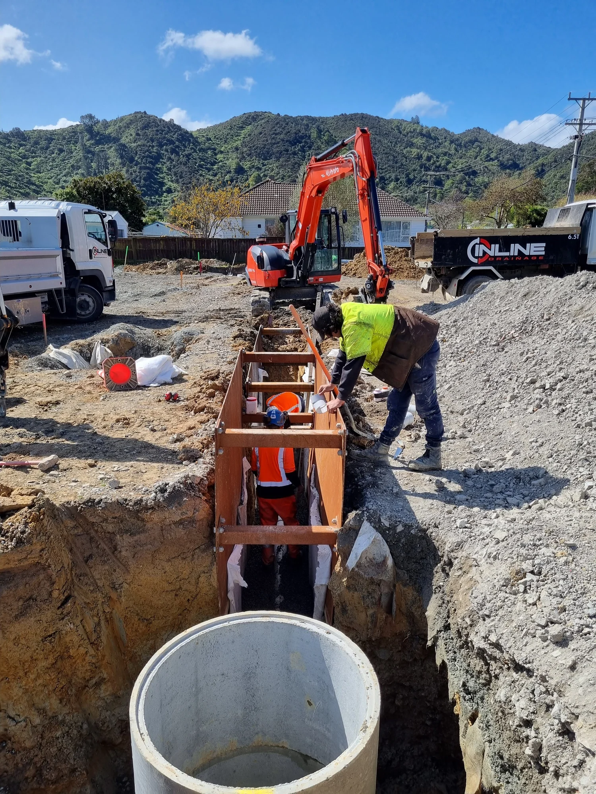
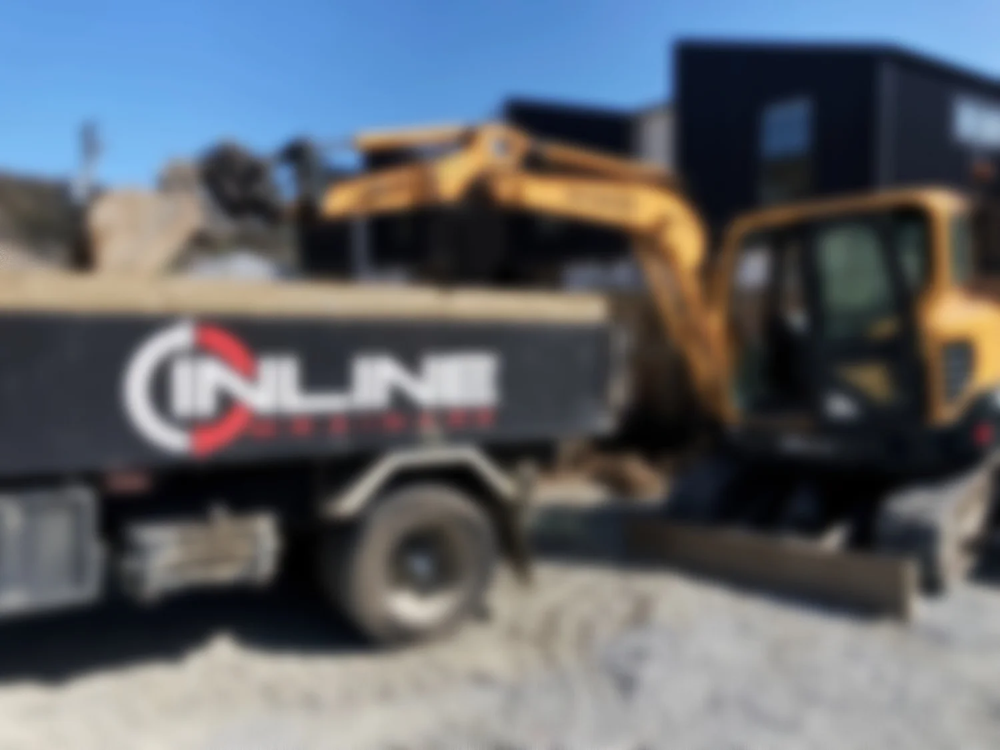
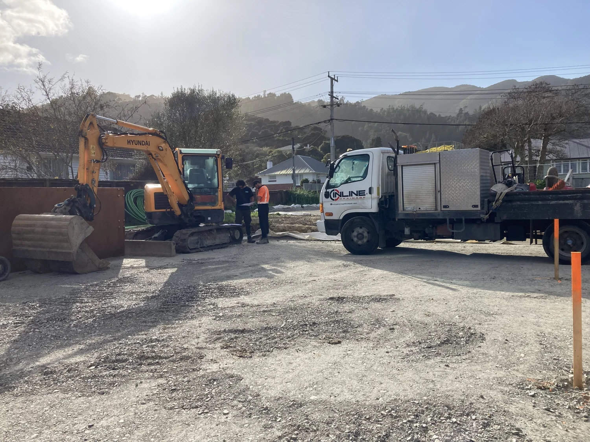

Registered drain layers · Wellington, NZ
Inline Drainage
Restore, replace and future-proof your water systems. Owner-operated, fully qualified, with over 45 years of combined experience.
Who we are
Built to last,
laid Inline.
With over 45 years of combined experience, we're a dedicated owner-operated team of fully qualified drain layers and qualified water reticulators.
Our mission is to improve the longevity and resilience of Wellington's water infrastructure. Trust us to restore, replace, and future-proof your water systems.
What we do
Our services
-
01
Development Siteworks
Experience creating services for new or refurbished sites, delivering on time and on budget and laying a solid foundation for the remainder of the development.
-
02
Stormwater Drainage
We specialise in stormwater management and connections in Wellington, and can consult on designing and implementing stormwater solutions.
-
03
Wastewater & Sewage
Registered drainlayers who install and connect all types of wastewater and sewage projects, for smooth flow and sign off.
-
04
Residential Drainage
Managing drainage around residential properties. Upgrading and improving the existing infrastructure and future-proofing your property.
-
05
Watermain Connections
We work with Wellington Water approved operatives so systems are installed correctly with little disruption to the local area.
-
06
Drain Clearing
We are experienced in unblocking residential drains across the Wellington Region.
-
07
Digger & Truck Hire
For more details on this service, please email inlinedrainage@outlook.com.
On site
Our projects





Project partners
Where we work
Servicing the wider Wellington Region
- Wellington
- Lower Hutt
- Upper Hutt
- Porirua
- Kāpiti Coast
- Wairarapa
Company policies
Safe, certified,
accountable.
As our company grows, our policies are reviewed and updated to follow current regulations and good business practice.
Careers
Come work
for us
Interested in working at Inline Drainage? Let's chat to see if you're the right fit.
Start the conversationContact
Let's work
together
Reach out to learn how we operate and how we can help. We'll gladly discuss and advise on all things drain laying.